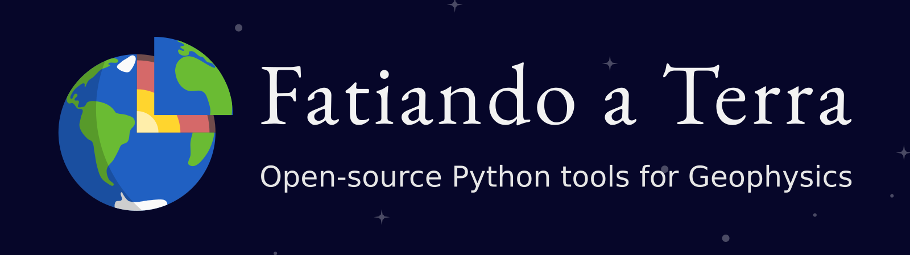

Geophysical research
powered by open-source

Talk at the GDSL - University of Liverpool - 4 March 2020
First a bit of history
Undergraduate
BSc Geophysics | Instituto de Astronomia, Geofísica e Ciências Atmosféricas - Universidade de São Paulo
Brief stint as a paleomagnetist getting stung by hornets.
Project #1

C command-line programs for gravity modelling
"The signal has been calculated for the spherical geometry with the software Tesseroids"
Grad School
MSc + PhD Geophysics | Observatório Nacional - Rio de Janeiro (photo credit Leandro Ciuffo; CC-BY)
Inverse problems:
- Given observed gravity disturbances
- Estimate density anomalies
- Ill-posed problem
- Some methods exist
- Mine: "Planting inversion"
Uieda and Barbosa (2012) doi:10.1190/geo2011-0388.1
Inverse problems:
- Given observed gravity disturbances
- Estimate density anomalies
- Ill-posed problem
- Some methods exist
- Mine: "Planting inversion"
Uieda and Barbosa (2012) doi:10.1190/geo2011-0388.1
Inverse problems:
- Given observed gravity disturbances
- Estimate density anomalies
- Ill-posed problem
- Some methods exist
- Mine: "Planting inversion"
Uieda and Barbosa (2012) doi:10.1190/geo2011-0388.1
Project #2

First commit of the fatiando library:
928515b0fc
First website and example gallery from 2011. (Google+ 😂)
In 2018 started a massive rewrite breaking into separate tools.
Postdoc
Project #3

C program and API for mapping geophysical data
Started in the 80s by Paul Wessel and Walter Smith (white-haired gentlemen in the middle).
GMT is crucial infrastructure software for marine geoscience and seismology
My postdoc was starting PyGMT
Back to the present
GMT's biggest challenge:
sustainability
How Paul can retire in peace 🏝:
-
Lower barriers for contribution
(: moved to GitHub) -
Automate the boring stuff
(: setup CI and bots) -
Nurture a sense of community
(: new Discourse forum) -
Formalize governance roles
(: still figuring it out) -
General house cleaning
(: new NSF grant 🤞)
Fatiando a Terra 2.0 🚀
How to build tools that can scale, will last, and are trustworthy

_(2).jpg){kind=link}
Breath of fresh air
- PhD student from Argentina
- Collaborating since 2016
- Leading some of our packages
- Inspired writing down my process
- Visiting Liverpool in June
Machine learning inspired spatial data processing and interpolation
Manage data registries: download, cache, update, unzip, etc
Used by other packages to manage sample data:
Verde, Harmonica,
MetPy,
scikit-image (PR 3945),
and yt (PR 2417)
Documentation is crucial
- Undocumented code will not be widely used
- Writing docs makes your code better
- Forces to think clearly about design
- ... and use your own code in examples
- Document before you implement
- "DDD: documentation driven development"
Nurturing our small community
-
Code of Conduct
for everyone -
Contributing Guide
for new developers -
Maintenance Guide
for new maintainers -
New
Authorship Guidelines
for giving (academic) credit
Nurturing our small community
-
Code of Conduct
for everyone -
Contributing Guide
for new developers -
Maintenance Guide
for new maintainers -
New
Authorship Guidelines
for giving (academic) credit
Guide updates ()
Deployment ()
-
New tag created on GitHub (
v1.0.0) - Build HTML docs in new folder and push to gh-pages
-
Point
/latestto the new folder - Build source/wheel and push to PyPI
- conda-forge bot picks it up from there
Towards the future
Conclusions
Contact
- Jane Herdman - A2.06
- @leouieda
- leouieda.com
This presentation by Leonardo Uieda is licensed under a Creative Commons Attribution 4.0 International License.